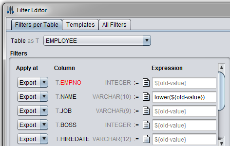
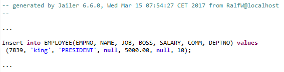
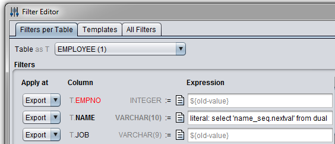
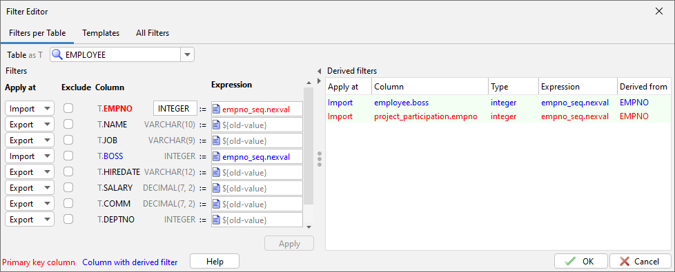
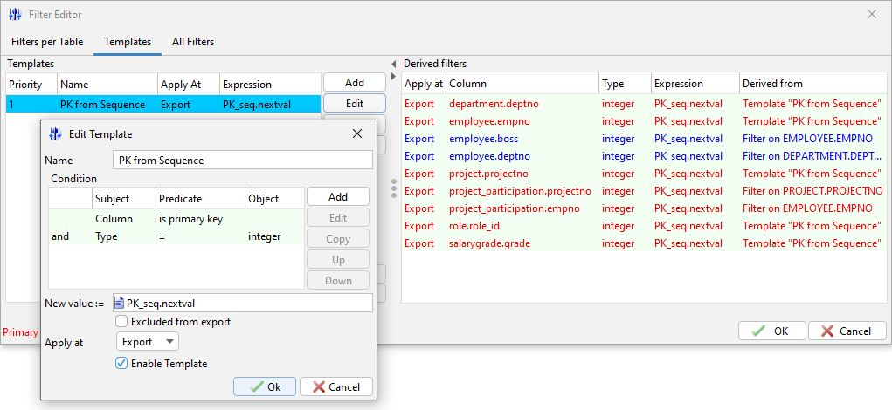
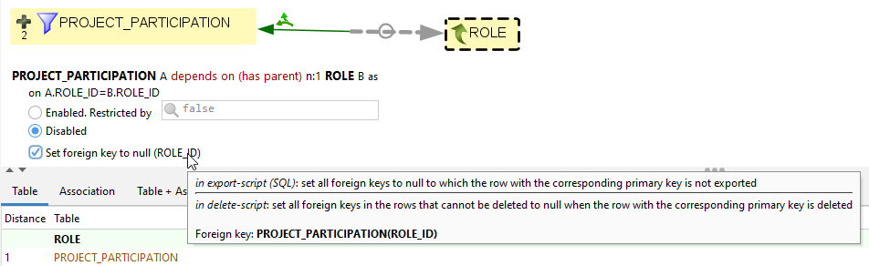

A filter assigns an SQL expression to a table column.
Export filterAn export filter is evaluated during the
export phase. The column values will be replaced by the result of
the expression when the export file is written. ${old-value} is a
synonym for the filtered column.
With the filter EMPLOYEE.NAME := lower(${old-value})

The employee names will be exported with all letters
lowercase:

Literal filterA literal filter is also evaluated during
the export phase. The result will be written literally into the
export file. During the import phase, it will be evaluated as a SQL
expression. To define a literal filter, add the prefix "literal:"
to the filter expression. The filter:

replaces employee names with numbers from a sequence in the target
database.

Import filterAn import filter is evaluated during the
import phase. Import filters are especially useful for filtering
primary key columns. Filters on primary key columns are
automatically applied to the corresponding foreign key columns.
With an import filter, it's guaranteed that a 'null'-value remains
null and that a foreign key value is mapped to the same value as
the primary key even if the filter expression is not a
deterministic function.
(More precisely, if the filter expressions and the types of any two filters on two different columns are exactly the same, then both filters will map same values to exactly the same target values.)
This filter uses a sequence to generate new EMPNOs during the
import phase:

Filter templatesTemplates allow defining filters based on
a condition on a column.

"null" filter on foreign key columns
If a foreign key of a table is nullable, a "null" filter on it (resp. on all columns of a composite foreign key) causes only the foreign key columns of those rows to be filled with "null", whose parent row is not exported as well.
In the same way, only the foreign key columns of those rows are set to "null" when deleting, which are not deleted themselves but their parent.
The extraction model editor offers the corresponding checkbox "Set foreign key to null ...".

|
|